Heat
Main Content
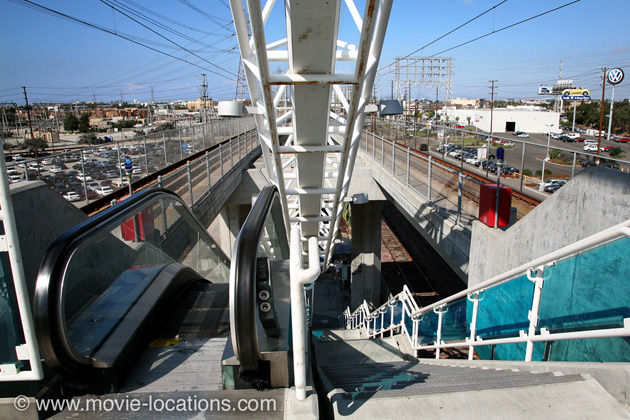
Discover where Michael Mann's classic Heat (1995) was filmed, on eyecatching locations around Los Angeles, including Los Angeles International Airport, Downtown LA, Downey, Santa Monica, Venice Beach, Beverly Hills, Redondo Beach and Burbank.
Los Angeles itself is a vital part of Michael Mann's crime drama/character study. Notice how even most of the interiors open onto panoramic views of the city from wide windows or balconies.
The overground rail station, at which Neil McCauley (Robert De Niro) is seen arriving under the credits sequence, is Marine-Redondo Station, 2406 Marine Avenue in Redondo Beach, South Bay. It's the southern end of Los Angeles’ Metro C Line (formerly the Green Line), running east and west between Norwalk and Redondo Beach, curving south near the Los Angeles International Airport.
It's as stylish as it appears onscreen and, in fact, Michael Mann liked this station he returned to it for the final scenes of Collateral.
The hospital from which McCauley steals an ambulance, is St Mary Medical Center, 1050 Linden Avenue in Long Beach (seen also in the big-screen version of The X-Files) and, while Chris Shiherlis (Val Kilmer) seems to be buying dynamite in ‘Arizona’, he’s no further away than Whittier, southeast of Los Angeles.
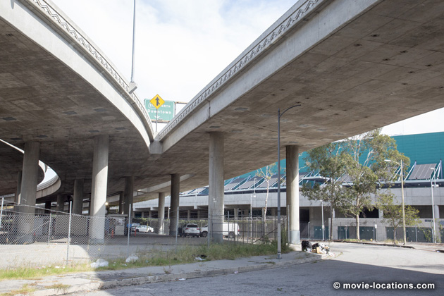
The bearer bonds robbery, where the security guards from the armoured truck are cold-bloodedly executed, takes place under the knot of elevated freeways behind the LA Convention Center, south of Downtown.
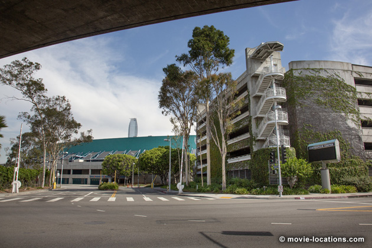
It's on Venice Boulevard beneath the junction of the Santa Monica Freeway (I-10) and the Harbor Freeway (I-110), which I now learn from Google Maps is called the Dosan Ahn Chang Ho Interchange, after an early leader of the Korean-American immigrant community. That's the rear of the Convention Center and its carpark you can see in the background.
In the fraught aftermath, loose cannon Waingro (Kevin Gage) is lucky to escape the wrath of McCauley during a confrontation at Johnie’s Broiler in Downey, south LA. The classic 1958 restaurant, seen also in David Fincher’s The Game, Robert Altman’s Short Cuts, One Hour Photo, Ben Stiller’s Reality Bites and Tina Turner biopic What’s Love Got To Do With It, closed down and was largely – and illegally – demolished. Amazingly, it’s back from the dead and has been rebuilt as Bob’s Big Boy Broiler, 7447 Firestone Boulevard, though there do seem to be a few differences.
Now we come to a slew of locations which have closed down, starting with the bookshop where McCauley buys a book on metallurgy. It was Hennessey and Ingalls bookstore, which stood at 1254 Third Street Promenade in Santa Monica.
The restaurant, where Eady (Amy Brenneman) comes on to McCauley while he’s studying ‘Stress Fractures in Titanium’, was the nearby Broadway Deli, 1457 Third Street at Broadway at the pedestrianised Third Street Promenade in Santa Monica (not to be confused with the Broadway Bar and Grill on the opposite corner, which you might recognise as record store ‘Trax’ from Pretty In Pink). The deli is now Lululemon Athletica, a sports store.
Not far away, on the Santa Monica sea front, was the Japanese restaurant staked out by driven cop Vincent Hanna (Al Pacino), which was Zen Zero, 1535 Ocean Avenue. The premises remains an upscale restaurant, Ivy at the Shore, now serving up Californian cuisine.
Demolished and replaced by apartments, is the deserted drive-in, where Van Zant’s men set up a double cross. This was the Centinela Drive-In, which stood at 5700 West Centinela Avenue, Inglewood.
Acting on a tip-off, Hanna, accompanied by a SWAT team, stakes out a precious metals repository, which McCauley and his crew are planning to rob. One small slip gives away their presence away and McCauley hastily aborts the job and flees.
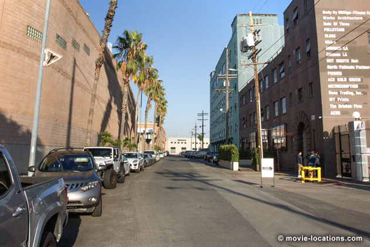
The repository site can be found in the bleak industrial area east of Downtown, which is in the process of being redeveloped into the Arts District. Old warehouse buildings are now as likely to house a budding tech company or an animation studio.
The building stood on Factory Place, a cul-de-sac running east from South Alameda Street.
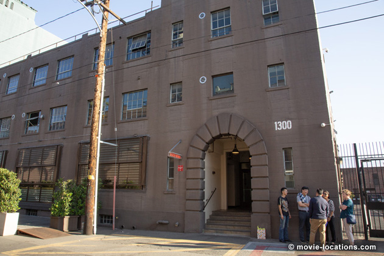
There's been serious redevelopment and some buildings have already been demolished, including the one used as the 'repository', but the street is still instantly recognisable and the utility pole, which Cheritto (Tom Sizemore) climbs to deactivate the security system, remains.
With a kind of odd professional respect, McCauley and Hanna meet up (the legendary first appearance of de Niro and Al Pacino on screen together) in upscale Beverly Hills restaurant Kate Mantilini, which stood for 27 years at 9101 Wilshire Boulevard until being forced to close its doors in June 2014. As of 2023, the premises still seems to be lying empty and up for lease.
Only a couple of blocks west of the Academy of Motion Picture Arts and Sciences HQ at 8949 Wilshire, the restaurant was a favourite with Academy members – and a certain amount of lobbying come Oscar time.
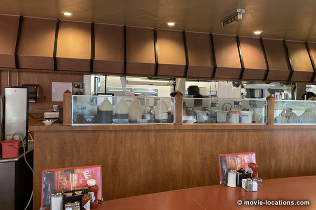
Breedan (Dennis Haysbert) throws in his job as dishwasher, when he’s recruited by McCauley as a driver, in one of the few remaining original Bob’s Big Boy burger bars, at 4211 West Riverside Drive in Burbank.
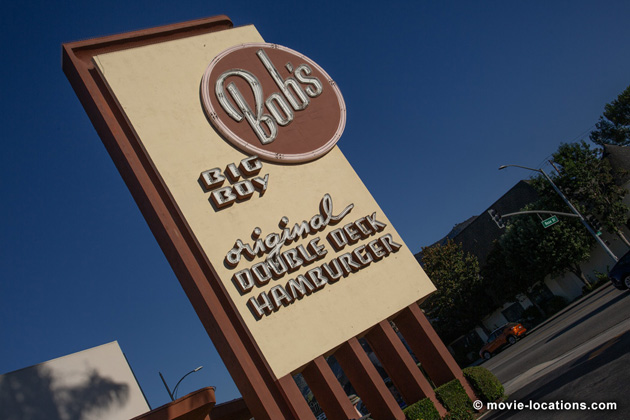
At its peak in 1989, there were over 240 Bob's locations throughout the USA but, as of September 2023, that's down to four in California – as well as this one in Burbank and the one we've already seen in Downey, there are branches in Norco and Northridge.
This Bob's was designed in 1949 by architect Wayne McAllister in a style now called Googie, described as "incorporating the 1940s transitional design of Streamline Moderne while anticipating the freeform 50s coffee shop architecture".
Its towering sign (oddly not seen in the film) certainly remains eye-catching.
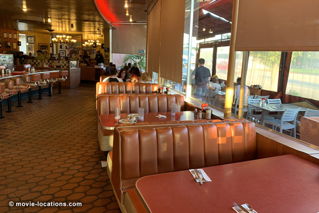
A brass plaque by one of the tables once commemorated the filming but I couldn't spot it on my most recent visit. Being close to the Warner Bros Studios, the likes of Bob Hope, Mickey Rooney, Debbie Reynolds and other celebs were once regulars.
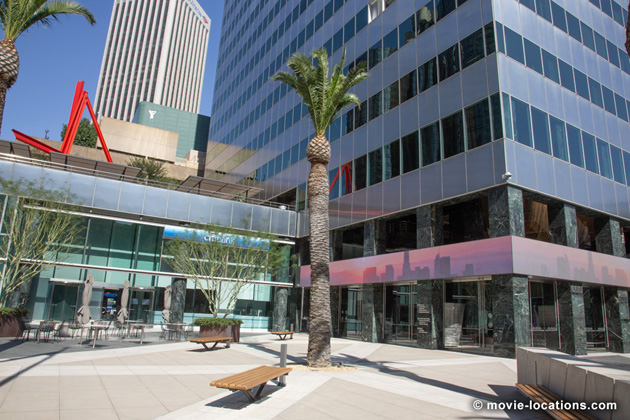
The ambitious bank job Macaulay's crew attempts is on 444 South Flower Street at Fifth Street, Downtown, (you can see its geometric silver sculptures on the forecourt again in Fight Club and in William Friedkin’s To Live and Die in LA).
There's recently been some remodelling. I was a bit confused, thinking the sculptures had gone, but they've simply been glassed in to become part of the building's lobby – so no perfect match-up shots.
I first saw this movie the night before I took off to the States in 1996 to get photos for my first book, the Worldwide Guide to Movie Locations. The next day, looking for a parking space in downtown Los Angeles, I swung into South Figueroa only to find myself by pure chance in the middle of the shoot-out location).
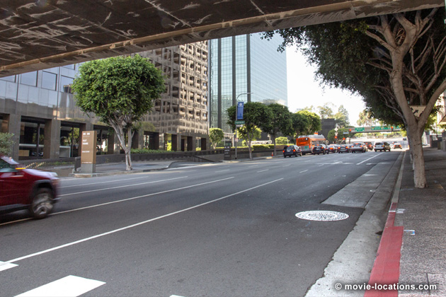
Hanna and the police arrive on West Fifth Street, triggering the mother of all shoot-outs, which spills out onto the stretch of West Fifth stretching off toward Figueroa Street.
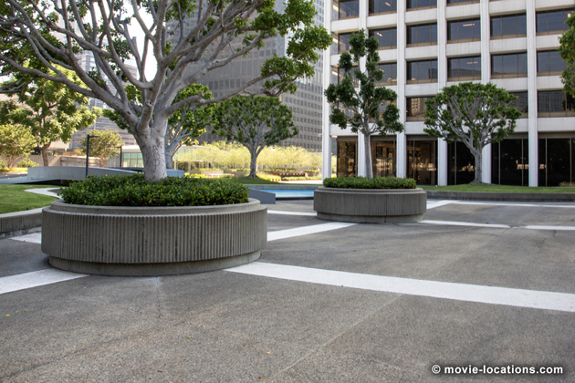
Cheritto takes off on foot and suddenly finds himself a block north on Union Bank Plaza, which must have involved lugging the loot he was carrying up an escalator to the landscaped space which is atop a parking garage on the northeast corner of Fourth and Figueroa Streets.
Here, among the circular planters and ornamental pools, he takes a little girl hostage and Hanna is forced to take him out with a risky headshot.

McCaulay calls Nate (Jon Voight) to get the address of crooked businessman Van Zant (William Fichtner), in The Blue Room, 916 South San Fernando Road, Burbank, a stylish bar which you can see more of in Christopher Nolan's Memento.
When Hanna's relationship starts falls apart, he moves into what was the Holiday Inn, now Hotel Angeleno, 170 North Church Lane, overlooking the freeway in Brentwood (Paul Giamatti drives past its circular tower at the beginning of Sideways).
The net is closing in on the gang. The police hold Shiherlis' wife, Charlene (Ashley Judd), in a safe house where they force her to lure him into a trap.
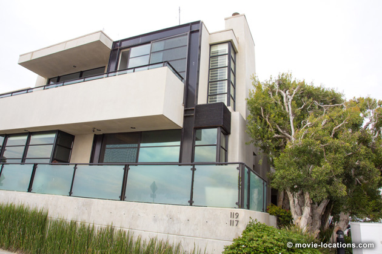
This is a luxurious beachfront home, 117-119 Ocean Front Walk in Venice, at the junction with Navy Street, down which Shiherlis' car slowly crawls.
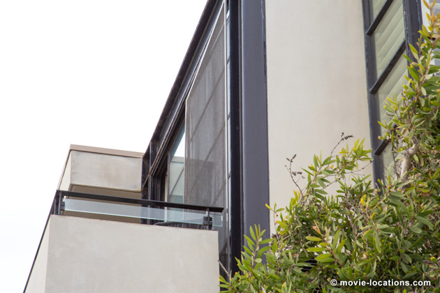
You can see the balcony from which Charlene discreetly warns off her husband on the corner of Navy Street.
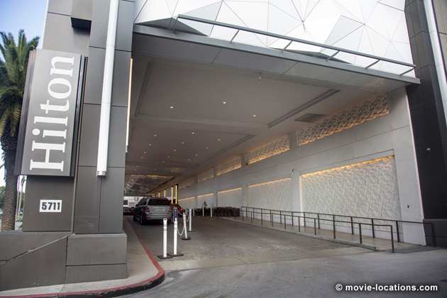
On the verge of getting out of the city and starting a new life, McCauley makes the fatal mistake of stopping off to settle the score with Waingro.
The 'Airport Marriott', in which Waingro is lodging, is in reality the Hilton Los Angeles Airport, 5711 West Century Boulevard. Of the row of airport hotels here, the Hilton with its sleek black glass tower block, is the one which fits Mann's aesthetic perfectly.
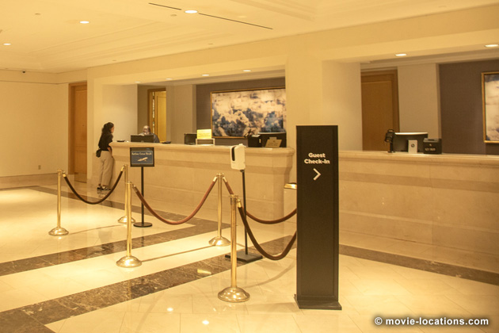
As Eady sits waiting in the car, McCauley sneaks in through the side entrance of on the Hilton on the narrow service road leading north from from West Century Boulevard. The road can no longer be seen as in that aerial shot. It's now closely hemmed in by the two-storied Parking Spot Century.
Guests flee from the front entrance, and in the confusion McCauley lets himself into the lobby and finally deals with Waingro.
Unfortunately for him, Hanna is close on his tail, catching up with him on that service road. McCauley is forced to live up to his cardinal rule – leaving everything behind in a heartbeat, including Eady.
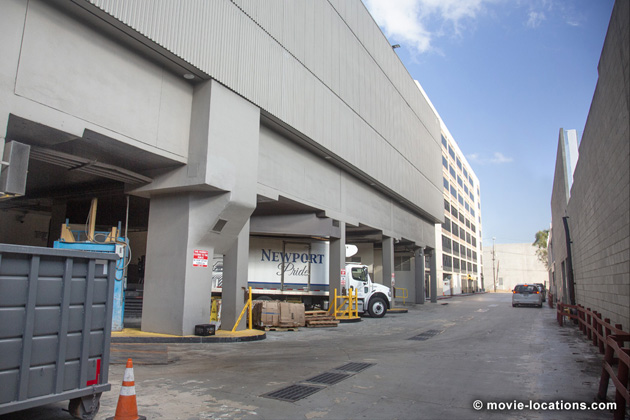
No, you can't simply leap over a hedge onto the airport's runways. In fact, the road doesn't lead to Los Angeles International Airport (LAX) at all.
It stands in the opposite direction, south across West Century Boulevard. But who cares? The runways are the perfect setting for the final confrontation – back in the innocent days before airport security became such a big issue.
Visit Info
Visit The Film Locations
California | Los Angeles
Visit: Los Angeles
Flights: Los Angeles International Airport (LAX), 1 World Way, Los Angeles, CA 90045 (tel: 424.646.5252)
Travelling around: Los Angeles Metro
Stay at: the Hilton Los Angeles Airport, 5711 West Century Boulevard, Los Angeles, CA 90045 (tel: 310.410.4000)
Stay at: Hotel Angeleno, 170 North Church Lane, Brentwood, Los Angeles, CA 90049 (tel: 310.476.6411)
Visit: Bob’s Big Boy Broiler, 7447 Firestone Boulevard, Downey, CA 90241 (tel: 562.928.2627)
Visit: Bob’s Big Boy, 4211 West Riverside Drive, Burbank, CA 91505 (tel: 818.843.9334)
Visit: the Blue Room, 916 South San Fernando Boulevard, Burbank, CA 91502 (tel: 323.849.2779)